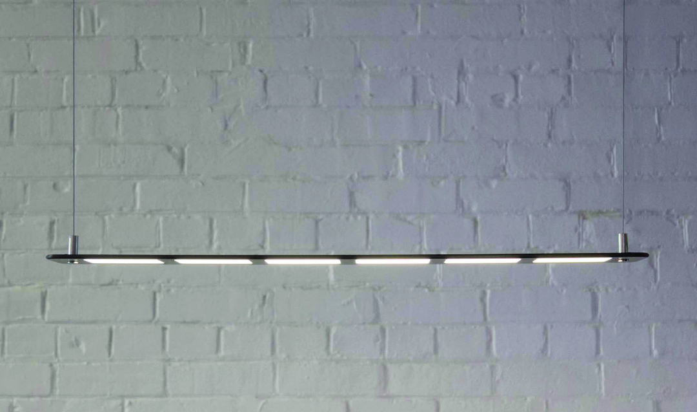
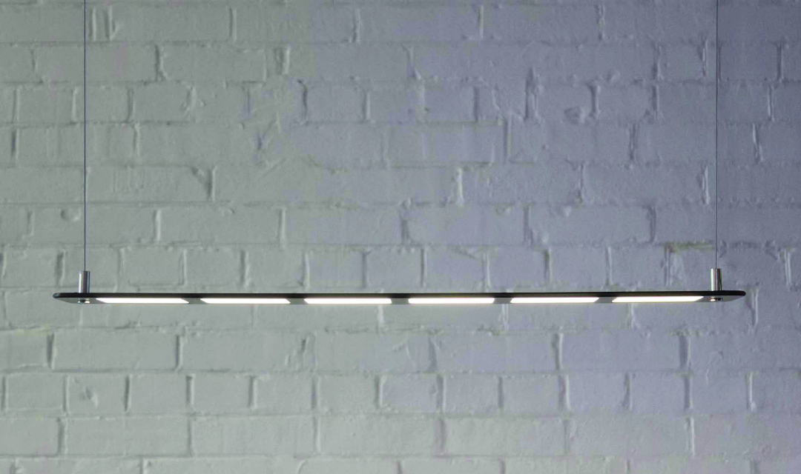

A6 OLED Pendant · OTI Lumionics
Internship project · 2015
Industrial design
Electronics
Lighting design
Prototyping
I designed the A6 luminaire during my internship at OTI Lumionics as an experimental project to highlight the qualities of OTI‘s OLED light panels. The resulting pendant was only 9mm thick, made possible by the OLED pannels and clever cable routing inside the body of the lamp.
Due to the cost constraints of manufacturing OLED panels, the pendant was not produced as a consumer product. The prototype was first unveiled at the Toronto Interior Design Show in 2016.
 
